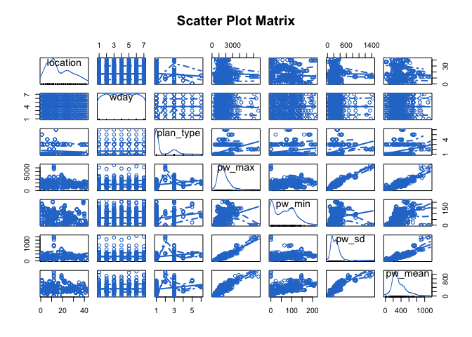
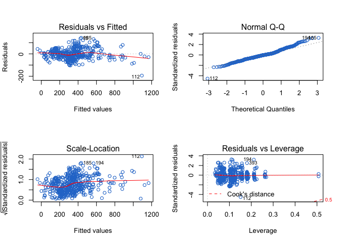

The Prediction model
This is an R program to apply Multiple linear regression technique on electric power consumption prediction. Our goal is to create a model that predicts daily electric power consumption of different households based on historical electric data, location, day of week, and plan type.
- This tests the following hypotheses:
- H0: There is no linear association between historical energy consumption of households data, location, day of week, and plan type.
- H1: Here is a linear association between historical energy consumption of households data, location, day of week, and plan type.
- We selected the data for 86 households and 42 locations for 6 months from 2018-01-01 to 2018-06-30 and divided it into training and test sets. For each machine learning model, we trained the model with the train set for predicting power consumption and used the test set to verify the prediction model.
# Create new variable that can be used for modeling
df.elec <- df.day %>% group_by(user_id, location, wday, plan_type) %>%
dplyr::summarise(pw_mean = round(mean(power), 4),
pw_max = round(max(power), 4),
pw_min = round(min(power), 4),
pw_sd = round(sd(power), 4))
# Encoding categorical location data.
df.elec$location <- as.factor(df.elec$location)
df.elec$location = factor(df.elec$location,
levels = as.vector(unique(df.elec$location)),
labels = c(1, 2, 3,
4, 5, 6, 7 , 8 , 9, 10, 11, 12,
13, 14, 15, 16, 17, 18, 19, 20,
21, 22, 23, 24 ,25 ,26 ,27, 28,
29, 30 ,31 ,32 ,33 ,34 ,35 ,36 ,
37 ,38 ,39 ,40 ,41 ,42))
# Encoding categorical plan_type data.
df.elec$plan_type = factor(df.elec$plan_type,
levels = as.vector(unique(df.elec$plan_type)),
labels = c(1, 2 ,3 ,4 ,5 ,6))
# Encoding categorical day of week.
df.elec$wday <- as.factor(df.elec$wday)
# Selecting predictor variables.
df.elec <- df.elec[,c("location", "wday", "plan_type", "pw_max", "pw_min", "pw_sd", "pw_mean")]
# Removing all the zeros.
df.elec<-df.elec[!(df.elec$pw_mean <1),]
# Splitting the dataset into the Training set and Test set.
set.seed(123)
split=0.80 # Define an 80%/20% train/test split of the dataset
trainIndex <- createDataPartition(df.elec$pw_mean, p=split, list=FALSE)
training_set <- df.elec[ trainIndex,]
test_set <- df.elec[-trainIndex,]Our response variable will continue to be mean of Electric but now we included location, wday, plan_type, max, min and sd of electric power consumption as our list of predictor variables. Our new dataset contain the seven variables to be used in our model. It is now easy for us to plot them using the scatterplotMatrix function:
# Plot matrix of all variables.
scatterplotMatrix(df.elec, spread=FALSE, lty.smooth=2,
main="Scatter Plot Matrix", col="#2879d0")
- The matrix plot above allows us to vizualise the relationship among all variables in one single image. For example, we can see how location and day of week are related (see first column, second row top to bottom graph).
Build Linear Regression Model
In this section, we’ll train a Linear Regression model for predicting households daily electric power consumption based on historical electric data, location, day of week, and plan type.
# Fitting Multiple Linear Regression with variables to the Training set.
regressor = lm(formula = pw_mean ~ . ,
data = training_set)
# Capture model summary as an object.
regressor.summary <- summary(regressor)
f_statistic <- regressor.summary$fstatistic[1] # fstatistic
f <- regressor.summary$fstatistic # parameters for model p-value calc
model_p <- pf(f[1], f[2], f[3], lower=FALSE) # model p-Value
r_sq <- regressor.summary[8] # R-Squared
adj_r_sq <- regressor.summary[9] # adj R-Squared
aic <- AIC(regressor) # AIC
bic <- BIC(regressor) # BICANOVA
Using ANOVA to assess the significance of the category as a whole.
datatable(Anova(regressor))- Taken together, it can be seen that the categorical variable day of week is no longer significantly associated with the variation in daily electric power consumption between individuals. Significant variables are location and plan type.
Performance Measures:
# F-statistic and model p-Value
datatable(data.frame(F.Statistic=f_statistic, Model.pValue= model_p))- This is a global null hypothesis to help asses the model. When testing the null hypothesis that there is no linear association between dependent variable and predictor variables. Assuming an alpha of 0.05, since the p-value is less than alpha, we reject the null hypothesis (F55,409 = 128.1122, p-value < 2.2e-16).
# R-squared and Adjusted R-squared
datatable(data.frame(R_Sq=r_sq, Adj_RSq=adj_r_sq))# AIC and BIC
datatable(data.frame(AIC=aic, BIC=bic))Let’s interpret the contrasts of the variables.
# Contrasts of the variables.
datatable(regressor.summary$coef, options = list(pageLength = 6))- When there’s more than one predictor variable, the regression coefficients indicate the increase in the dependent variable for a unit change in a predictor variable, holding all other predictor variables constant. For example, the regression coefficient for Location 4 is 66.92826, suggesting that an increase of 1 percent in Location 4 is associated with a 67 percent increase in the daily electric power consumption, controlling for the other predictor variables. The coefficient is significantly different from zero at the p < .0001 level. On the other hand, the coefficient for Location 5 isn’t significantly different from zero (p = 0.27) suggesting that Location 5 and the daily electric power consumption aren’t linearly related when controlling for the other predictor variables.
Regression diagnostics
par(mfrow=c(2,2))
plot(regressor, col="#2879d0")
- Residuals versus Fitted – the Residuals versus Fitted graph (upper left)
- A horizontal trend line in the plot indicates absence of nonlinear patterns between response and predictors, which is what is expected in a linear model.
- A model will exhibit heteroscedasticity when the residuals are not equally spread along the fitted values and there are some points on the plot well-separated from the rest, you see clear evidence of a curved relationship, which suggests that you may want to add a quadratic term to the regression.
- Normality – the Normal Q-Q plot (upper right) is a probability plot of the standardized residuals against the values that would be expected under normality. Though most of the points seem to fall on the straight 45-degree line which indicates that our residuals come from a normal distribution, there are some points that stray from the line in the lower and upper quantiles of the plot. It is possible that these points do not come from a normal distribution, but most of our points seem to come from a normal distribution so there is not a lot to worry about here.
- Scale-Location – the Scale-Location graph (bottom left) should be a random band around a horizontal line. The plot shows most the residuals appear randomly spread, not a lot the residuals spread wider. So we seem to meet the constant variance assumption (homoscedasticity).
- Residuals vs Leverage – the Residual versus Leverage graph (bottom right)
- It doesn’t have a large positive or negative residual (an outlier), so the observations that are predicted well by the fitted regression model.
- An observation without a high leverage value has an unusual combination of predictor values. That is, it’s no an outlier in the predictor space. The dependent variable value can be used to calculate an observation’s leverage.
- We can barely see Cook’s distance lines (a red dashed line) because almost all cases are well inside of the Cook’s distance lines, the observations that have a proportionate impact on the determination of the model parameters.
Predicting the Test set results
Once the model is created, it can then be used to make predictions on new examples that were not seen in training (the test data).
y_pred = predict(regressor, newdata = test_set)Calculate prediction accuracy and error rates
# Calculate accuracy measures on training set
actual_fitted <- data.frame(actual=training_set$pw_mean, fitted=regressor$fitted.values)
min_vals <- apply(actual_fitted, 1, min)
max_vals <- apply(actual_fitted, 1, max)
training_min_max <- min_vals/max_vals
training_min_max_accuracy <- mean(training_min_max)
# Calculate accuracy measures on test set
actuals_preds <- data.frame(cbind(actual=test_set$pw_mean, predicted=y_pred))
min_vals <- apply(actuals_preds, 1, min)
max_vals <- apply(actuals_preds, 1, max)
predicted_min_max <- min_vals/max_vals
predicted_min_max_accuracy <- mean(min_vals/max_vals)
# Display
datatable(data.frame(training_min_max_accuracy=training_min_max_accuracy,
predicted_min_max_accuracy=predicted_min_max_accuracy))# Correlation Accuracy
correlation_accuracy <- cor(actuals_preds)
correlation_accuracy## actual predicted
## actual 1.0000000 0.9626168
## predicted 0.9626168 1.0000000- By calculating accuracy measures we can find out the prediction accuracy of the model, 96% is a higher correlation accuracy implies that the actual and predicted values have similar directional movement.
# Calculate some standard regression evaluation statistics
regr.eval <- DMwR::regr.eval(actuals_preds$actual, actuals_preds$predicted)
datatable(as.data.frame(regr.eval))Display actual and predict observations
# Actual and predict observations
datatable(actuals_preds, options = list(pageLength = 6))Repeated k-fold CV
Let’s ensure the model equation we have will perform well, when it is ‘built’ on a different subset of training data and predicted on the remaining data.
In below result we will define the training control, we use repeatedcv method to divide our dataset into 10 folds cross-validation and repeat only 3 repeat times in order to slows down our process.
# Define the training control
fitControl <- trainControl(
method='repeatedcv', #repeat k-fold cross validation
number=10, # number of folds
repeats=3, # number of repeats
savePredictions = 'final', # saves predictions for optimal tuning parameter
classProbs = T # should class probabilities be returned
)
# Fitting Multiple Linear Regression with variables to the Training set.
regressor.cv <- train(pw_mean ~ .,
data = training_set,
method = "lm",
trControl = fitControl)
model_lm <- regressor.cv
save(model_lm, file = "model_lm.Rdata") # Save modelModel summary
load("model_lm.Rdata")
model_lm## Linear Regression
##
## 465 samples
## 6 predictor
##
## No pre-processing
## Resampling: Cross-Validated (10 fold, repeated 3 times)
## Summary of sample sizes: 417, 420, 417, 417, 419, 419, ...
## Resampling results:
##
## RMSE Rsquared MAE
## 48.53071 0.9301044 36.64231
##
## Tuning parameter 'intercept' was held constant at a value of TRUELooking for other parts of this series?